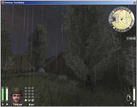
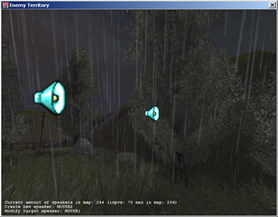
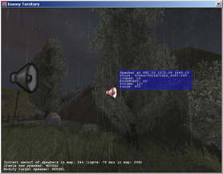
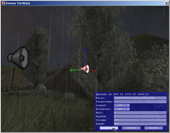
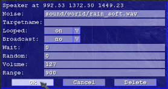

© 2003 Splash Damage, Ltd. All Rights Reserved.

| Wolfenstein: Enemy Territory Documentation © 2003 Splash Damage, Ltd. All Rights Reserved. |
|
Commands
There are four commands (toggles) available for editing speaker's as follows:
(Any of these commands can be bound to keys for quicker editing)
|

|
\editspeakers This enables the edit mode for speakers. It automatically disables drawing of your HUD and weapon. You will get an overview of current number of speakers in the map (only those placed with \editSpeakers) and what keys your edit commands are bound to. Once in edit mode you can use the commands for creating, modifying and reverting. Executing \editSpeakers again will disable edit mode. |
|

|
\dumpSpeaker This creates a new speaker right in front of you (64 units horizontal offset of the player origin for the techies out there). You can't place speakers inside solid structures, if you attempt this it will be moved horizontally towards your origin until it can be placed. |
|
  
|
\modifySpeaker Point your crosshair at the speaker you want to edit and use \modifySpeaker to bring up the GUI. The GUI has the following options to set the speaker's flags:
origin
noise
targetname
looped
broadcast
wait
random
volume
range
|
| \undoSpeaker The last speaker system command will undo the last command issued while in edit mode. |
Scripting
There are three trigger types available to trigger sound events from map
scripts. Every speaker that is supposed to be executed via a script needs a
unique targetname. The triggers are:
| togglespeaker <targetname>: | plays a speaker on execution |
| enablespeaker <targetname>: | turns on a looped speaker on execution (speaker's looped flag must be 'off' or it will play) |
| disablespeaker <targetname>: | turns off a looped speaker on execution |
togglespeaker will switch the speaker from one state to another. If toggling a looped sound it will start or stop playing. A non-looped sound will play once and then stop.
enablespeaker and disablespeaker can be used to switch on and off a looping sound, e.g. the Morse code sound for the command posts).